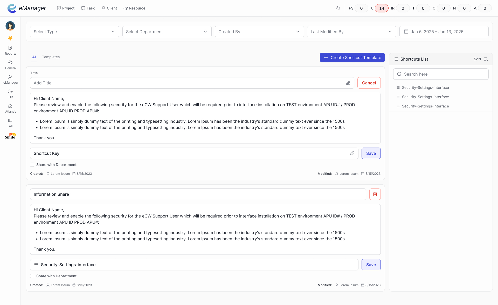
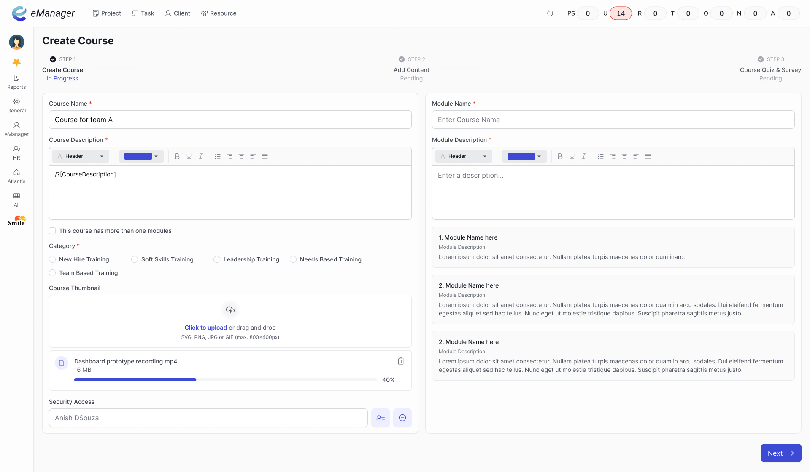
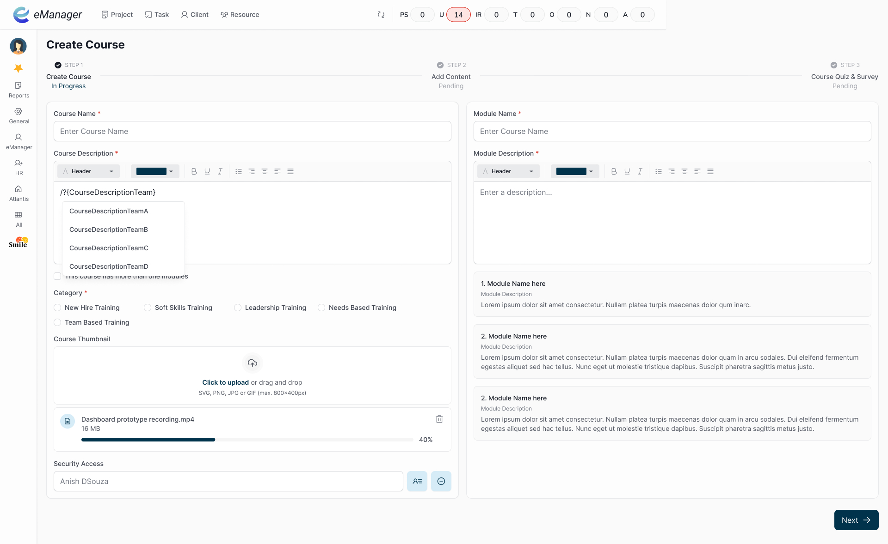
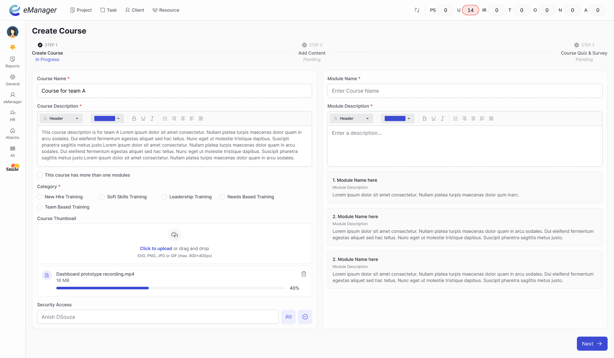

Problem Statement
Support agents, operations staff, and senior leadership were all using the same internal messaging tool- and all doing the same thing: typing, copying, and pasting the same standard responses, acknowledgements, and updates over and over.
Existing tools weren't the answer: canned response tools were too rigid- they pasted text with no ability to customise for a specific name or situation. Templates required navigating away from the compose box. Neither was fast enough for live support work under peak load.
Why this mattered
This was a real friction point:
- Users wasted a lot of time rewriting standard answers or paragraphs.
- Support agents slowed down, especially during peak hours.
- Repetitive work led to copy-paste errors and inconsistent replies.
- Senior staff sometimes avoided using the system for this reason.
For the business, slow and inconsistent responses meant risk to quality and higher internal costs.
Hypothesis
What we concluded
The main issue was lack of quick, flexible text shortcuts. People needed a simple way to reuse standard paragraphs, but with the ability to edit names or fields each time.
What we did
Built a “magic macro” tool. Users create their own shortcuts for long messages, with custom fields.
When writing a message, typing /?[ShortcutTitle] shows a dropdown of available macros.
Picking one pastes the full paragraph, ready for editing.
Design Process
Explore
- Looked at canned responses in other tools (too rigid).
- Considered templates, but wanted something even faster and more flexible.
Iterate
- Tested “macro picker” with just keyboard commands. Too technical for some.
- Added a dropdown suggestion so anyone can use it, even if they forget shortcut names.
- Made sure users can create and manage their own macros - no admin bottleneck.
Implement
- Used simple
/?[ShortcutTitle]trigger, works for all user levels. - Dropdown appears with matching macros as you type.
- Custom fields (like names) prompt for quick edits.
- Integrated without changing existing workflows.
Constraints
No formal user research, fast delivery needed, worked with existing internal system.
Rejected
- Overcomplicated forms for macro creation (too slow).
- Relying only on saved drafts (hard to find, inconsistent).
Screenshots & Notes

Admin view- macro library showing all team shortcuts with title, trigger command, and last-used date. Anyone can create or edit their own macros without admin approval.

Trigger in action- typing /?[shortcut] in the compose box instantly surfaces matching macros as a dropdown, no navigation required.

Dropdown suggestions- macros filter as you type, each showing a preview of the first line of content so the user knows exactly what they're selecting.

Macro inserted- the full paragraph appears instantly in the compose box, with custom fields (like [Name]) highlighted and ready to edit before sending.
Final Solution
- Users create shortcuts for any repeat message.
- Typing
/?[ShortcutTitle]suggests matching macros. - Full paragraph appears instantly; required fields are easy to edit.
- Reduced steps, no copy-paste needed.
- All internal users, from support to CEOs, can use the tool.
This solved:
- Time wasted on repeat messages.
- Inconsistent and error-prone responses.
- Frustration for heavy users.
- Less human errors.
Impact & Learnings
Impact
- In a post-launch feedback session with the support team, agents reported saving 80–90% of the time previously spent on repeat replies- consistent across 10 of 12 agents surveyed.
- 2 senior managers who had previously avoided the messaging tool became regular users within 2 weeks of the macro tool shipping
- Message consistency improved- support quality reviews flagged fewer off-brand or incorrect responses
- Zero new training needed- the /?trigger pattern was learned by all user types within one session
Learnings
Always test with the least technical user - features that seem simple may not be clear without clear triggers and hints.